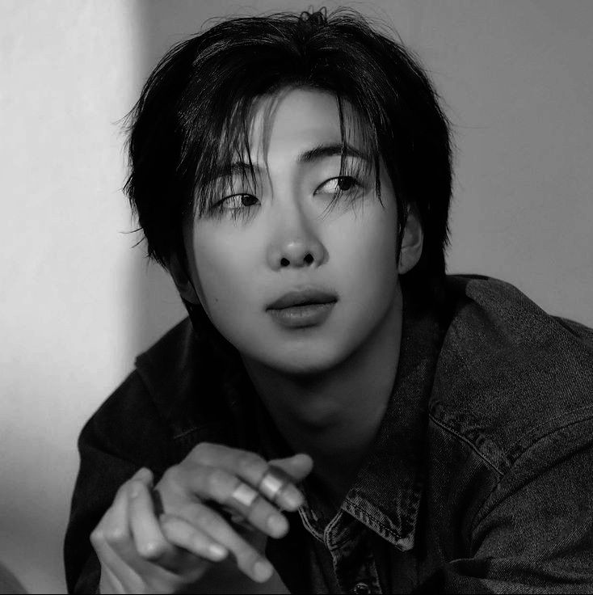
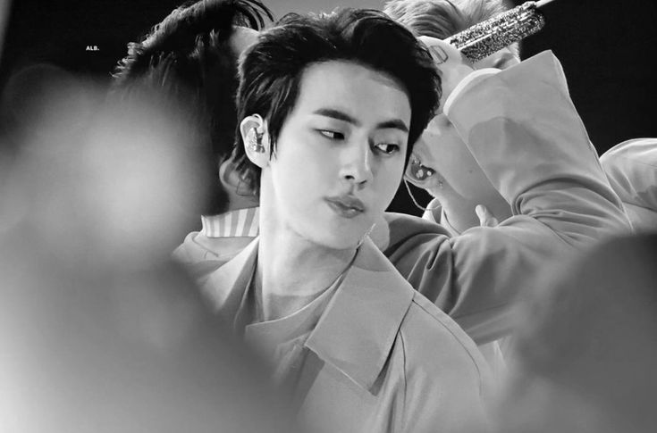
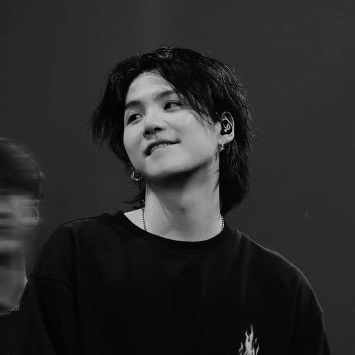
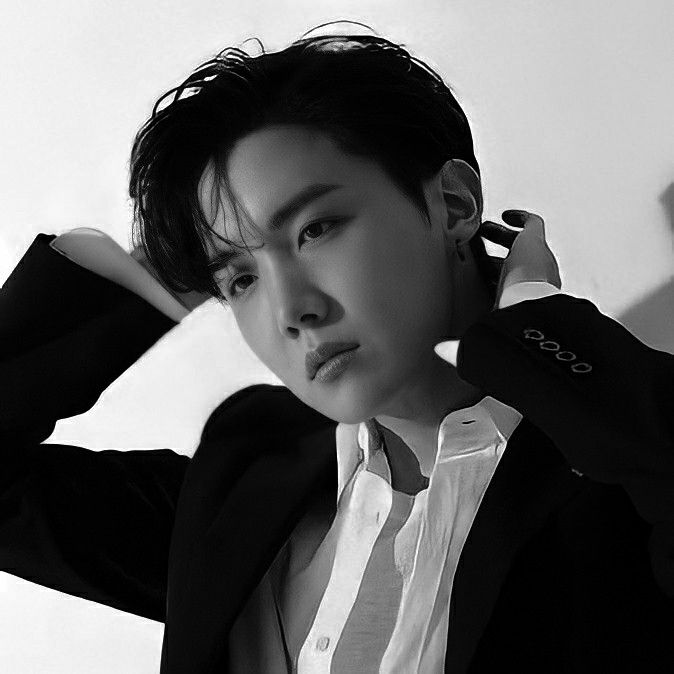
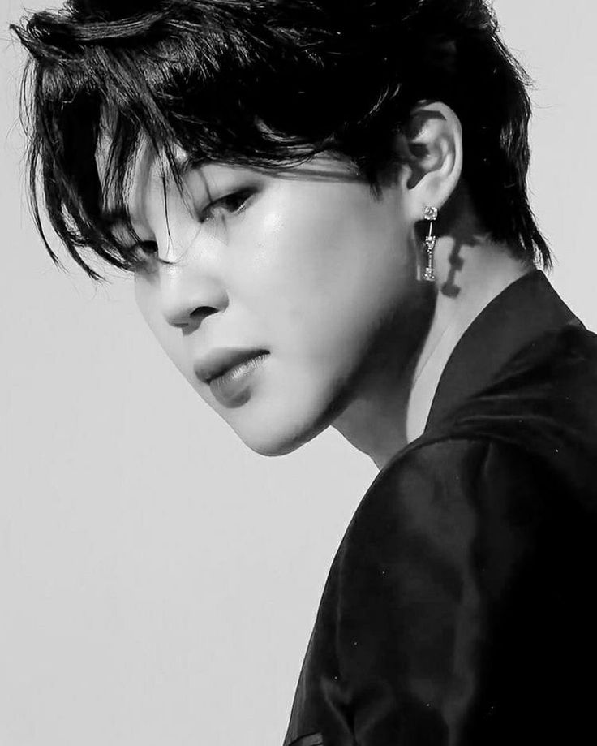
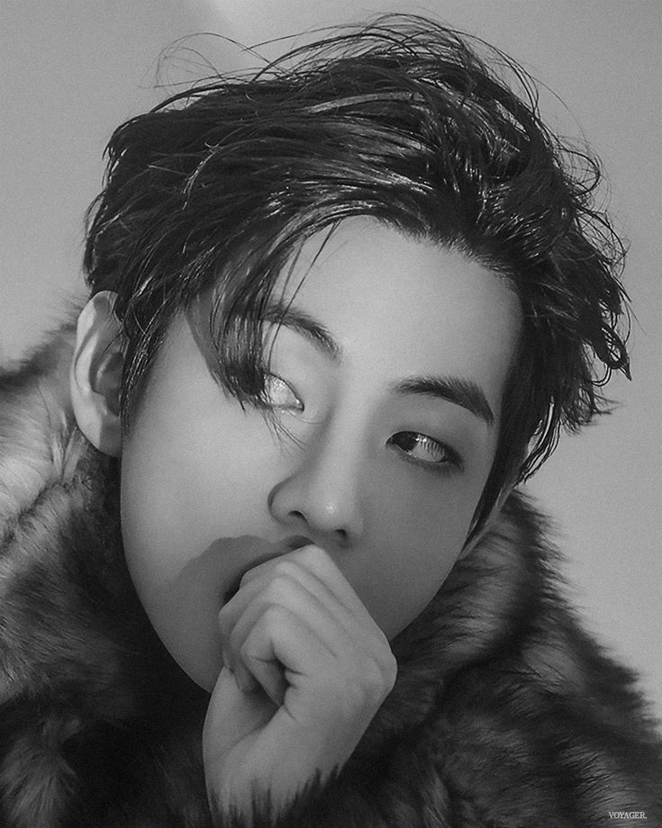
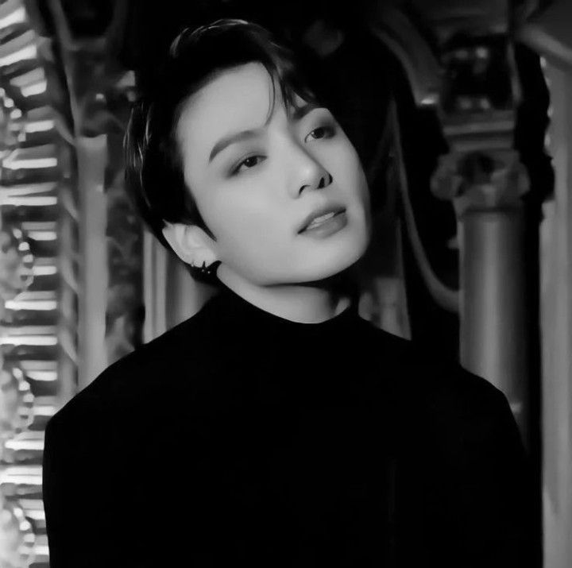

Seperti yang kalian tau,dia adalah leader dari Group BTS.Yang biasanya di panggil RM.
Lahir 12 September 1994. Ia Debut pada tahun 2010.Kalian juga perlu tau kalo ia ini member pertama yang masuk grup bts ini loh...
RM ini salah satu rapper di grup musik ini.kemampuan rapper nya juga sudah di akui oleh banyak orang.
RM juga member yang cerdas makannya dia cocok untuk menjadi leader karena iqnya 148,CERDAS SEKALI BUKAN!?
RM sudah punya banyak album dari grup dan solonya loh...
NAH...kalo Soekjin ini atau biasanya dipanggil JIN,ia adalah member tertua di bts loh...
Lahir 4 Deseember 1992. Julukan dia WORLD WIDE HANDSOME...Super duper ganteng di akui sama dunia nih...Walaupun dia tertua tapi dia bukan leader di bts.
JIN ini salah satu vokalis di grup musik ini.kemampuan vokal nya juga sudah di akui oleh banyak orang.
Gantengnya JIN bikin semua army kepincut deh,walaupun sudah tua tapi tambah ganteng yakan?tapi dia ga modal ganteng doang yaa...dia juga punya banyak prestasii lohh...
Banyak sekali album yang JIN punya mau dari grup ataupun solonya!
MIN YOONGI atau biasanya dipanggil Suga/Agustd.
Lahir 9 Maret 1993. Suga ini adalah Lead Rapper loh...KEREN banget!!Kalo udah lead rapper berarti kampuan rap nya gamain-main dongg...kemampuan rap suga ini udah di akui oleh dunia,bahkan dia bisa rap panjang dengan lancar mau itu bahasa Inggris ataupun Korea.
Suga ini diantara member-member lainnya dia paling pendiem tapi pesonanya ga main-main nihh...
Suga juga punya acara di youtubenya Bangtan TV,dan kerennya suga ini dia adalah produser musik lohh,dia udah banyak nyimptain musik-musik yang di bawain oleh idol korea lainnnya maupun dari grup suga itu sendiri.
Keren kan suga ini.army-army pasti bakal kepincut sama Yoongi!!!
JUNG HOSEOK atau yang kalian kenal J-Hope/HOBI.
Lahir 8 Februari 1994.Perlu kalian tau jhope ini adalah LEAD DANCER loohh...
selain lead dancer jhope ini rapper dan bisa vokal jugaa.
URI SUNSHINE adalah julukannya,kenapa!? karena senyum dan tawanya bisa membuat semuanya bersinar dan terhibur dengan hadirnya jhope.
Jhope keren dia punya album banyak mau itu solo atau dari grupnya!!!!
Park JImin atau Jimin.
Lahir 13 Oktober 1995.Dan jimin ini member terakhir yang debut di grup BTS.Dalam BTS, Jimin dikenal karena keahliannya dalam menari dan vokal yang kuat. Ia juga sering kali menjadi pusat perhatian dengan penampilannya yang energik dan karismatik di atas panggung. Jimin memiliki gaya tarian unik, yang telah membuatnya mendapatkan pengakuan dari banyak penggemar di seluruh dunia.
Jimin ini adalah vokalis dengan suara yang khas dan dancer grup loh...
BABY MOCHI adalah julukannya,karena karakternya yang lemah lembut dan penyayang.
kamu jim in gabisa jim out dehhh!!!!
Kim Taehyung atau taehyung atau V
Lahir 30 Deseember 1995Siapa yang ga kenal dengan V? V ini adalah vokalis dan visual center.Bisa jadi visual center di grup BTS karena ketampanannya yang bersertifikat loh...
Suaranya yangg deep membuat vokalnya yang khas.
Senyumnya yang khas dan mimik mukanya yang selalu menggemaskan.V juga sudah bermain beberapa Kdramaa loh...
Ga ganteng doang tapi V juga berprestasi!!!!!
Jeon Jungkook atau jungkook/JK
Lahir 1 September 1997.JK adalah member termuda loh..Dengan JK member termuda tapi presti Jungkook ga kalah dari member-member lainnya,dengan posisinya lead vocal,jungkook juga berhasil menampilkan visual dan dancenya yang menarik kerennya!!
Jungkook adalah member yang Multitalenta!!
Julukan yang di peroleh buat Jungkook adalah GOLDEN MAKNAE!!! dia muda tapi sangat sukses!!!
Banyak sekali prestasi yang maknae dapet ini!! KERENNN.....
